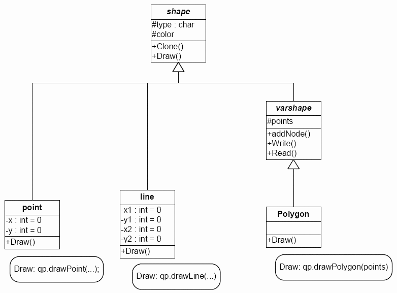

This is a 1-week lab.
Overview
It is now time to add more complicated shapes to our program. Specifically, we
will be adding polygons because they have the interesting feature that their
size (i.e., number of vertices) is variable.
There are other shapes besides polygons, however, that have a variable number of vertexes,
and it wouldn't be good to reinvent the wheel (e.g., file reading and writing code) for each
one. Therefore, a `varshape' abstract base class (ABC) has been written to encapsulate common elements
of polygons, polylines, Bézier curves, etc. varshape is derived from shape so that
it shares the common interface (has a color and type, has concrete classes that implement Clone and Draw, etc.)

You will derive your polygon class from varshape. You will need to implement constructors, the destructor,
and operator=. You should only need to override Draw and Clone. You may modify the varshape class
if needed (for example, if you are using something besides a char for type), but make sure that it
remains viable as a base class for other shapes that are defined by a variable number of vertexes.
Activities
Without removing any prior functionality from your shell, do the following. Some of these
items may have already been completed for previous labs.
- Override the Erase function from Shell so that the user may erase the image
by pressing the Erase button.
- Add a Polygon button to your shell and develop a mechanism for specifying polygons using
the mouse. It is recommended that you keep the points specified by the user in a container
and only new a polygon and Add it to your image when the user indicates that the polygon is
finished by double-clicking.
- You MUST have a polygon class. It is NOT acceptable to save
a polygon as a bunch of lines.
- Note that QPainter has a drawPolygon()
function. The required argument is a const reference to a QPointArray, which is the internal representation
used in the protected data member of varshape, so you will have access to it in polygon::Draw().
- Make certain that your code accounts for an unexpected order of events. For
example what happens when a user switches drawing mode while drawing a polygon,
a paint event occurs during a polygon specification, or the user executes
a text command? There are a number of reasonable ways to handle these situations; make
sure that your program does something well defined and does not crash.
- Don't forget to update your help information.
- Make certain that your polygons can be read from and written to files.
This is mostly completed for you in the varshape::Read() and ::Write() functions.
You should not need to override these, although some small changes may be needed to your
program or to these functions in varshape to make them compatible.
- It is NOT REQUIRED to implement adding a polygon from the command line.
Additional Details
- The color features from the previous lab must work for polygons as well.
This suggests that color (at least line color) is a property of all shapes.
- Implement file reading and writing for all shape types. Files should include
color information. Use any convenient format, making sure that your read
function accepts files generated by your write function. Either a typed command or
the File menu items may be used for accessing these features.
- QColor can return a
single value that encompasses R, G, and B information. This may be convenient
for storing colors in files.
There are many areas for extra credit with this assignment, however
you must complete the basic requirements in order to receive extra
credit. Some possibilities include...
- filling;
- polylines;
- showing a polygon in progress;
- having an elastic edge as the mouse is moved for a polygon in progress;
- filling a polygon in progress;
- ...
Consult with your professor in advance of adding extra-credit elements to your program.
Demonstration (during week 7 lab)
You will need to demonstrate your project to the instructor during the
week 7 lab meeting. The demonstration will count for 25% of your
project grade.
Lab report (due 4 P.M., the day before the week 7 lab)
Your lab report need not be self-contained. This means that it is
not necessary to restate the entire specification in your report.
- Prepare your report in the XML format described in the
Electronic Submission
Guidelines.
- Include...
- a brief overview of the assignment;
- details of any problems you encountered;
- suggestions for how the lab could be improved;
- things you could not figure out how to do;
- a list of extra features that you implemented, if any;
- a tally of the number of Non-commented new Lines Of Code (NLOC) written
for this lab assignment. Follow the requirements for this item
from lab 2.
- A summary of your activity log indicating how much time you spent
on the assignment. Follow the requirements for this item
from lab 2.
- Documented source code—See
lab 2 for information on gensrc, which
helps format your code for your XML report.
- If a file has not changed since the last assignment, note this in your
report and do not include the unchanged file.
- Follow the report submission requirements.
- Email this file to the instructor (durant@msoe.edu) with a subject and message
body indicating that this is your CS-321 Lab 5 submission.
If you have any questions, consult the instructor.
Course Objectives Addressed
- understand the design of graphical user interfaces.
- understand and be able to apply concepts of object-oriented programming, inheritance, polymorphism, and event-driven systems.
- be able to use reference materials to gain knowledge of an unfamiliar software library
- be able to implement multi-module software systems incorporating components developed by others.
- be able to clarify and document software requirements when specifications are initially incomplete or ambiguous.
- understand the need for extensive internal software documentation, and be able to provide it.